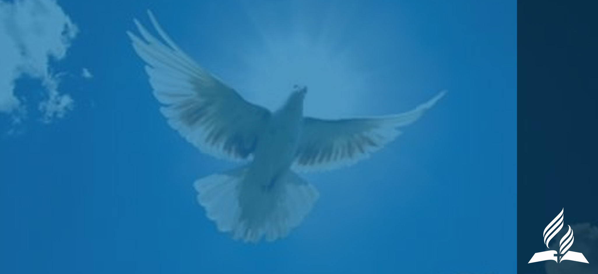
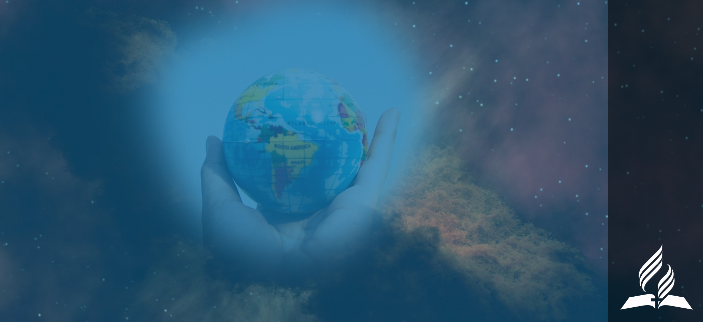
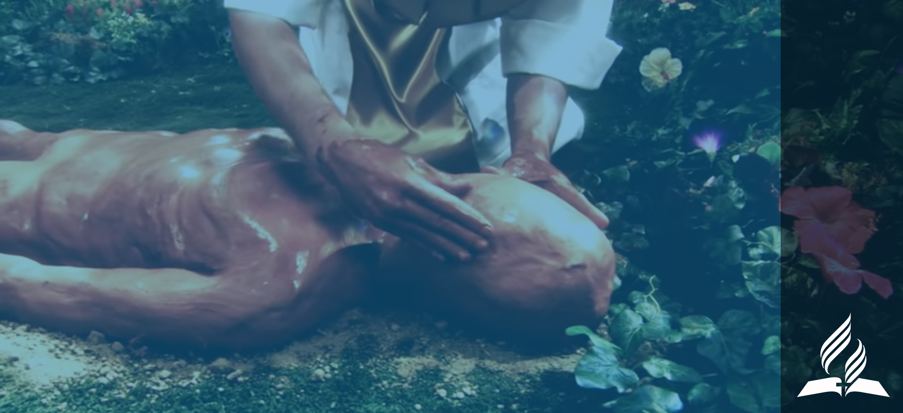
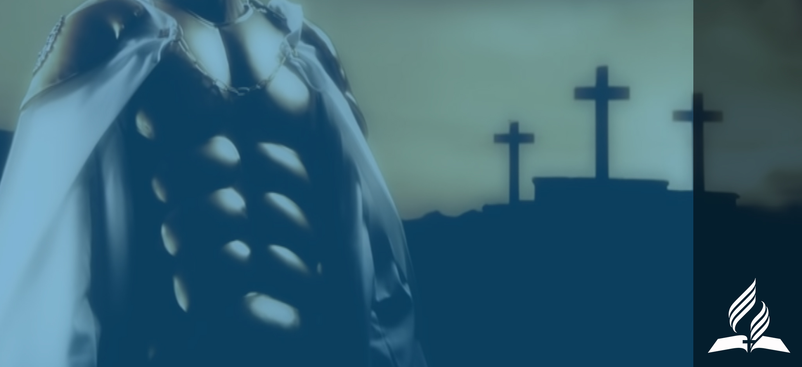
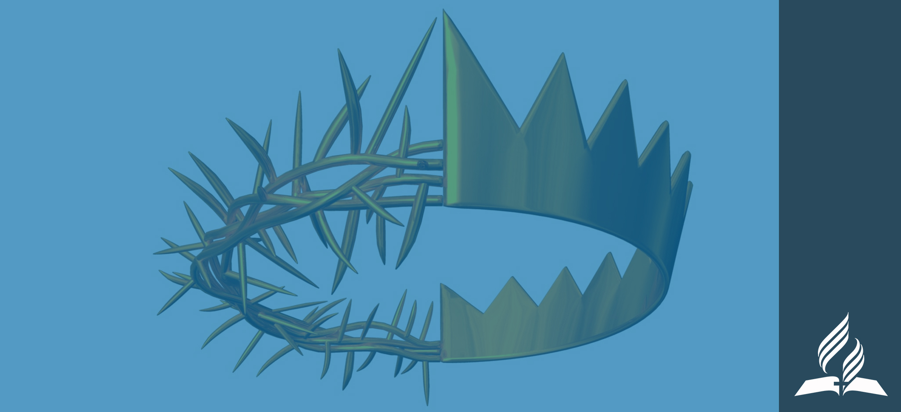
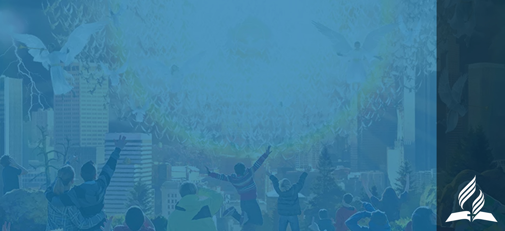
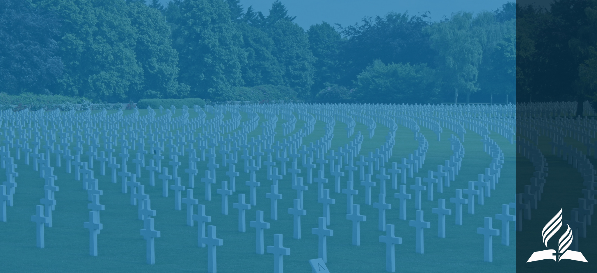

Maandiko Matakatifu, Agano la Kale na Agano Jipya, ni Maandiko ya Mungu yaliyoandikwa, yaliyotolewa kwa kuvuviwa wanadamu watakatifu wa Mungu ambao walinena na kuandika kwa kuongozwa na Roho Mtakatifu. Katika Neno hilo, Mungu amewapatia wanadamu ujuzi muhimu kwa wokovu. Maandiko Matakatifu ni ufunuo usiokosea wa mapenzi yake Mungu. Ndicho kiwango cha tabia, kipimo cha uzoefu, mfunuaji mwenye mamlaka wa mafundisho na kumbukumbu ya kuaminika ya matendo ya Mungu katika historia.

01. Maandiko Matakatifu

02. Utatu Mtakatifu
Kuna Mungu mmoja: Baba, Mwana na Roho Mtakatifu, umoja wa Nafsi tatu za milele. Mungu asiyeweza kufikwa na mauti, mwenye enzi zote, mwenye uwezo wote, mwenye kujua yote, juu ya yote, na aliyepo daima. Hana kikomo na anapita ufahamu wa kibinadamu, walakini akijulikana kupitia ufunuo wake mwenyewe. Yu astahili kuabudiwa, kusujudiwa na kutumikiwa na viumbe vyote milele zote.

03. Mungu Baba

04. Mungu Mwana
Mungu Mwana wa milele alifanyika mwili katika Yesu Kristo. Katika Yeye vitu vyote viliumbwa, tabia ya Mungu imefunuliwa katika Yeye, wokovu wa jamii yote ya mwanadamu unakamilishwa na ulimwengu unahukumiwa. Milele zote Mungu kweli, Alifanyika mwanadamu kweli, Yesu aliye Kristo. Alizaliwa na bikira Mariamu kutokana na mimba iliyotungwa kwa uwezo wa Roho Mtakatifu. Akaishi na kuipitia uzoefu majaribu kama mwanadamu, lakini kwa ukamilifu alioneysha mfano wa haki na upendo wa Mungu. Kwa miujiza yake alidhihirisha uwezo wa Mungu na alithibitishwa kuwa Masihi aliyeahidiwa. Aliteswa na kufa kwa hiari msalabani kwa ajili ya dhambi zetu, na kama mbadala wetu, alifufuliwa kutoka katika wafu, na akapaa kuhudumu katika hekalu la mbinguni kwa ajili yetu. Atakuja tena kwa utukufu mwingi kwa ukombozi wa mwisho wa watu wake na kurejeshwa kwa vitu vyote

05. Mungu Roho Mtakatifu
Mungu Roho Mtakatifu wa milele alikuwa mtendani pamoja na Baba na Mwana katika Uumbaji, katika Yesu kufanyika mwili na katika ukombozi. Aliwavuvia waandishi wa Maandiko Matakatifu. Alijaza maisha ya Yesu Kristo na uwezo. Huwavuta na kuasadikisha wanadamu; na wale wanaoitikia huwafanya upya na kuwabadilisha katika sura ya Mungu. Alipelekwa na Baba na Mwana ili kuwa siku zote pamoja na watoto wake, hueneza karama za Roho kwa kanisa., na kuwapa uwezo wa kumshuhudia Kristo, na kwa ulinganifu na Maandiko Matakatifu hongoza katika kweli yote.

06. Uumbaji
Mungu ni Muumbaji wa vitu vyote, na amefunua katika Maandiko Matakatifu uhalisi wa tukio la utendaji wake wa uumbaji. Katika siku sita Bwana alifanya “mbingu nan chi” na vitu vyote vilivyo hai juu ya nchi, akastarehe siku ya saba ya juma lile la kwanza. Kwa hiyo akaanzisha Sabato kama kumbukumbu ya milele ya kukamilisha kazi yake ya uumbaji. Mwanamume na mwanamke wa kwanza waliumbwa kwa mfano wake Mungu kama upeo wa kazi yake ya Uumbaji, wakapewa utawala juu ya ulimwengu, na kuagizwa wajibu wa kuutunza. Wakati ulimwengu ulipomalizika kuumbwa, ulikuwa “(m)ema ukitangaza utukufu wa Mungu.

07. Mwanadamu na Asili Yake
Mwanamume na mwanamke waliumbwa wakiwa na sura ya Mungu binafsi wakiwa na uwezo na uhuru wa kufikiri na kutenda. Japo waliumbwa huru, kila mtu katika umoja wote wa mwili, akili na roho, walimtegemea Mungu kwa uhai, kuvuta pumzi na mengineyo yote. Wakati wazazi wetu walipomkaidi Mungu, sura ya mwumbaji iliharibiwa na wakawa watu wa kufa. Uzao wao hushiriki hali hii ya mwanadamu aliyeanguka na matokeo yake yote. Huzaliwa wakiwa na unyonge na kuelekea kutenda dhambi. Lakini Mungu katika Kristo, aliupatanisha ulimwengu kwa nafsi yake na kwa roho yake akarejeza kwa watu wenye hali ya kufa taswira ya Mwumbaji. Walioumbwa kwa utukufu wa Mungu, wameitwa kumpenda Yeye, kupendana wao kwa wao na kutunza mazingira..

08. Pambano Kuu
Jamii yote ya wanadamu sasa imo katika pambano kuu baina ya Kristo na Shetani kuhusu tabia ya Mungu, Sheria yake na Utawala wake juu ya ulimwengu wote. Mapigano haya yalianzia mbinguni wakati kiumbe aliyeumbwa na kutunukiwa uhuru wa kuchagua , kwa kujiinua akawa Shetani, mpinzani wa Mungu na akaongoza sehemu ya malaika katika maasi. Akapenyeza roho uasi katika ulimwengu huu alipowaongoza Adamu na Hawa kwenye dhambi. Dhambi hii ya kibinadamu ilikuwa na matokeo ya kupotosha sura ya Mungu katika wanadamu wote, uchafuzi kwa ulimwengu ulioumbwa na mwishowe uteketezwaji wakati wa gharika iliyoonea ulimwenguni pote. Ikitazamiwa na viumbe wote, dunia hii ikawa uwanja wa pambano la ulimwengu wote, na ambalo kutokana nalo haki ya Mungu wa upendo hatimaye itathibitishwa. Katika kuwasaidia watu wake katika pambano hili, Kristo anamtuma Roho Mtakatifu na malaika watiifu kuwaongoza kuwalinda na kuwategemeza katika njia ya wokovu

09. Maisha, Kifo na Ufufuo wa Kristo
Katika maisha ya Kristo ya utii kamili kwa mapenzi ya Mungu, mateso yake, kifo chake na ufufuo, Mungu aliandaa tayari njia pekee ya upatanisho kwa dhambi ya mwanadamu, ili kwamba wale ambao kwa imani watapokea upatanisho huu wapate uzima wa milele, na ulimwengu wote uweze kuelewa vema upendo mtakatifu usio na kikomo wa Muumbaji. Kafara hii kamilifu huthibitisha haki ya sheria ya Mungu na neema ya tabia yake; kwa sababu hufanya vyote kuhukumu dhambi yetu na kutoa njia ya msamaha wetu. Kifo cha Kristo ni badala na hufidia, kikipatanisha na kubadilisha. Ufufuo wa Kristo hutangaza ushindi wa Mungu dhidi ya majeshi ya uovu, na kwa wale wanaipokea kafara hiyo huhakikishiwa ushindi hatimaye dhidi ya dhambi na mauti. Inatangaza ukuu wa Yesu Kristo ambaye mbele zake kila goti mbinguni na duniani litapigwa

10. Uzoefu wa Wokovu
Kwa upendo usio na kifani na rehema, Mungu alimfanya Kristo asiyejua dhambi kuwa dhambi kwa ajili yetu, kusudi katika Yeye tuweze kufanywa haki ya Mungu. Tukiongozwa na Roho Mtakatifu, tunatambua hitaji letu, na kukiri hali yetu ya dhambi, tunatubia uasi wetu, na kuonyesha imani katika Yesu kama Bwana na Kristo, kuwa mbadala na Kielelezo chetu. Imani hii inayopokea wokovu huja kupitia uwezo wa kimbingu kwa Neno nan i karama ya neema ya Mungu. Kupitia Kristo tunahesabiwa haki, kufanywa wana na binti wa Mungu, na kuokolewa kutoka katika mamlaka ya dhambi. Kupitia Roho Mtakatifu tunazaliwa upya na kutakaswa; Roho hufanya upya nia zetu, huandika sheria ya Mungu ndani ya mioyo yetu, na tunapewa uwezo wa kuishi maisha matakatifu. Tukikaa ndani Yake tunakuwa washirika wa hali ya asili ya uungu na kuwa na hakika ya wokovu sasa na katika siku ya hukumu.

11. Kukua Katika Kristo
Kwa kifo chake msalabani Yesu alizishinda nguvu za uovu. Yeye aliyewatiisha pepo wachafu wakati wa huduma yake hapa duniani amezivunja nguvu zao na kuthibitisha mwisho wao ni uangamivu usioepukika. Ushindi wa Yesu utupatia ushindi dhidi ya nguvu za uovu ambazo bado zinatafuta kututawala, tunapo tembea naye kwa amani, fyraha, na uhakika wa upendo wake. Sasa Roho Mtakatifu anakaa ndani yetu na kututia nguvu. Tukidumu kujikabidhi kwa Yesu kama Bwana na mwokozi wa maisha yetu tunawekwa huru kutoka katika mzigo wa matendo yetu yaliyopita. Hatuishi tena gizani, katika hofu ya nguvu za uovu, ujinga, na katika kukosa maana kwa namna ya maisha yetu ya awali,. Katika uhuru huu mpya ndani ya kristo, tumeitwa kukua katika kufanana na tabia yake, tukiongea naye kila siku katika sala, na kujilisha neno lake kikamilifu, tukikusanyika pamoja kwa ajili ya ibada, na kushiriki katika utume wa kanisa. Tukijitoa katika kuwahudumia kwa upendo wale wanaotuzunguka na kuwashuhudia wokovu wake, kuwepo kwake nasi daima kwa njia ya Roho hugeuza kila wasaa na kazi kuwa uzoefu wa kiroho.
12. Kanisa
Kanisa ni jumuiya ya waumini waliokubali kumkiri Yesu kama mwokozi na Bwana wao. Kwa kuunganika na watu wa Mungu katika Agano la Kale, tumeitwa kutoka ulimwenguni na tunaungana pamoja kwa ibada, ushirika, kufundisha Neno, kusherehekea Meza ya Bwana, katika utumishi kwa wanadamu na katika kutangaza injili duniani kote. Kanisa hupokea mamlaka yake kutoka kwa Kristo ambaye ni Neno aliyefanyika mwili, na katika Maandiko Matakatifu, ambayo ni Neno lililoandikwa. Kanisa ni familia ya Mungu iliyotengenezwa kwa agano. Kanisa ni mwili wa Kristo, jumuia ya imani ambayo Kristo mwenyewe ndiye Kichwa (Kiongozi). Kanisa ni bibi arusi ambaye Kristo alimfia ili apate kumtakasa na kumsafisha. Katika kurudi kwake kwa ushindi, atajiwasilishia kwake mwenyewe likiwa kanisa tukufu, aminifu kwa vizazi vyote, kile ambacho damu yake ilikinunua, likiwa halina doa wala kunyanzi bali takatifu lisilo na waa.
13. Masalio na Utume Wake
Kanisa la ulimwenguni linajumuisha wale wote ambao kwa kweli wanaoamini katika Kristo lakini katika siku za mwisho wakati wa kuenea kwa uasi, watu wa masalio wameitwa watoke wazitunze amri za Mungu na imani ya Yesu. Hawa masalio wanatangaza saa ya kuja kwa hukumu, wakihubiri wokovu katika Kristo, na kupiga mbiu ya kukaribia kuja kwake mara ya pili. Tangazo hilo linawakilishwa na mfano wa malaika watatu wa Ufunuo 14; linaambatana na kazi ya toba na matengenezo duniani. Kila muumini anatakiwa binafsi kuwa na sehemu katika ushuhuda huu wa ulimwenguni mwote.

14. Umoja Katika Mwili wa Kristo
Kanisa ni mwili moja wenye viungo vingi, vilivyoitwa kutoka katika kila taifa, kabila, lugha na jamaa. Katika Kristo tu uumbaji mpya; tofauti za rangi, utamaduni, elimu na utaifa, na tofauti kati ya tabaka ya juu na ya chini, tajiri na maskini, mwanamume na mwanamke miongoni mwetu visitugawanye. Sisi sote ni sawa katika Kristo, ambaye kwa Roho mmoja, ametungamanisha katika ushirika mmoja pamoja Naye na sisi kwa sisi; yatupasa tutumike na kutumikiwa bila upendeleo au usetiri. Kupitia ufunuo wa Yesu Kristo katika Maandiko Matakatifu tunashiriki imani ile ile, na tumaini, na kuwafikia wote kwa ushuhuda mmoja. Umoja huu una chimbuko lake katika umoja wa Mungu mwenye nafsi tatu, ambaye ametufanya kuwa watoto wake.

15. Ubatizo
Kwa ubatizo tunakiri imani yetu katika kifo na ufufuo wa Yesu Kristo, na kushuhudia kufia kwetu dhambi na kusudi letu la kuenenda katika upya wa uzima. Hivyo tunamtambua Kristo kama Bwana na Mwokozi, tunakuwa watu wake, na tupokelewa kama washiriki na kanisa lake. Ubatizo ni mfano wa muungano wetu na Kristo msamaha wa dhambi zetu, na kumpokea kwetu Roho Mtakatifu. Ni kwa kuzamishwa majini na unategemea uthibitisho wa imani katika Yesu na ushuhuda wa toba ya dhambi. Unafuata mafundisho katika Maandiko Matakatifu na ukubali wa mafundisho yake

16. Meza ya Bwana
Meza ya Bwana ni kushiriki katika mfano wa mwili na damu ya Yesu kama udhihirisho wa imani katika Yeye, Bwana na Mwokozi wetu. Katika uzoefu huu wa ushirika, Kristo anakuwepo kukutana na kuwaimarisha watu wake. Tunapotwaa (mkate na divai) kwa furaha tunatangaza mauti ya Bwana hata arudipo tena. Maandalizi ya Meza ya Bwana hujumuisha kujihoji nafsi, toba na ungamo. Bwana aliagiza huduma ya kutawadhana miguu ili kukumbusha utakaso mpya, kuonyesha nia ya kutumikiana sisi kwa sisi katika unyenyekevu unaofanana na wa Kristo, na kuungana mioyo yetu katika upendo. Huduma ya Meza ya Bwana ni ruhusa kwa waumini wote Wakristo.

17. Karama za Roho na Huduma
Mungu huwakirimia washiriki wote wa kanisa lake katika kila kizazi karama za kiroho ambazo kila mshiriki atatumia katika huduma ya upendo kwa ajili ya ustawi wa wote kanisani na wa wanadamu. Zikitolewa kwa nguvu za Roho Mtakatifu, ambaye humgawia kila mshiriki kama apendavyo Yeye, karama hizi hutoa uwezo wote na huduma zinazohitajika na kanisa katika kutimiza kazi iliyoagizwa kimbingu. Kulingana na Maandiko Matakatifu, karama hizi ni pamoja na huduma kama vile imani, kuponya, unabii, kuhubiri, kufundisha, utawala, upatanisho, huruma, na huduma ya kujinyima na upendano wa kusaidia na faraja kwa watu. Baadhi ya washiriki wameitwa na Mungu na kukirimiwa na Roho kwa ajili ya shughuli zinazotambuliwa na kanisa katika uchungaji, uinjilisti, utume na huduma ya kkufundisha inayohitajika hasa katika kuwapa zana washiriki kwa ajili ya huduma, kulijenga kanisa hata likomae kiroho, na kukuza umoja wa imani na kumjua Mungu. Wakati washiriki wanapozitumia karama hizi za Roho kama mawakili waaminifu wa neema mbalimbali za Mungu, kanisa hulindwa dhidi ya mivuto ya uharibifu wa mafundisho ya uwongo, na hukua kwa ukuzi utokao kwa Mungu, na kujengwa imara katika imani na upendo.

18. Karama ya Unabii
Mojawapo ya karama za Roho Mtakatifu ni unabii. Karama hii ni alama inayolitambulisha Kanisa la Masalio na ilidhihirika katika huduma ya Ellen G. White. Kama mjumbe wa Bwana, maandishi yake yanaendelea kuwa chanzo madhubuti cha ukweli yanayotoa kwa kanisa: faraja, uongozi, mafundisho, na maonyo. Pia yanaweka wazi kwamba Biblia ndiyo kanuni ambayo kwayo mafundisho yote na uzoefu lazima vipimwe.

19. Sheria ya Mungu
Kanuni kuu za sheria ya Mungu zimeunganishwa katika Amri Kuimi na zilifuatishwa katika maisha ya Kristo. Nazo zinadhihirisha upendo na mapenzi ya Mungu, na makusudi yake kuhusu mwenendo wa binadamu na mahusiano nazo ni sharti kwa watu wote katika kila kizazi. Amri hizi ni msingi wa agano la Mungu na watu na kanuni katika hukumu ya Mungu. Kupitia utendaji wa Roho Mtakatifu zinadhihirisha dhambi na kuamsha haja ya kumpata Mwokozi. Wokovu ni kwa neema, na si kwa matendo, lakini matunda yake ni utii kwa Amri Kumi. Utii huu hukuza tabia ya Kikristo na huwa na matokeo ya ustawi. Ni ushuhuda wa upendo wetu kwa Bwana na wajibu wetu kwa wanadamu wenzetu. Utii wa imani hudhihirisha uwezo wa Kikristo katika kubadilisha maisha, na hivyo kuimarisha ushuhuda wa Kikristo.

20. Sabato
Muumbaji mkarimu, baada ya siku sita za Uumbaji, alipumzika siku ya saba na akaanzisha Sabato kwa ajili ya watu wote kama ukumbusho wa Uumbaji. Amri ya nne ya sheria za Mungu zisizobadilika inaagiza kuadhimishwa kwa Sabato hii ya siku ya saba kama siku ya mapumziko, ibada, na huduma kulingana na mafundisho na uzoefu wa Yesu, Bwana wa Sabato. Sabato ni siku ya kushirikiana kwa furaha na Mungu na sisi kwa sisi. Ni mfano wa ukombozi wetu katika Kristo ishara ya utakaso, ishara ya utii wetu, na mwonjo wa umilele wetu katika ufalme wa Mungu. Sabato ni ishara ya daima ya agano la milele la Mungu kati yake na watu wake. Kuutunza kwa furaha wakati huu mtakatifu toka jioni hadi jioni, jua kuchwa hadi jua kucha, ni adhimisho la matendo ya Mungu ya uumbaji na ukombozi.

21. Uwakili
Sisi tu wmawakili wa Mungu, tuliokabidhiwa na Yeye wakati, fursa, uwezo, na mali na mibaraka ya dunia na rasilmali zake. Tunawajibika kwake kwa matumizi yake mazuri. Tunakiri umilikaji wa Mungu kwa kutoa utumishi mzuri kwake na kwa wanadamu wenzetu, kwa kumrudishia zaka na kutoa sadaka kwa ajili ya kutangaza injili Yake na kwa kulitegemeza na kulikuza kanisa lake. Uwakili ni upendeleo uliotolewa kwetu na Mungu kwa ajili ya malezi katika upendo na ushindi dhidi ya choyo na tamaa. Wakili huifurahia mibaraka inayowajia wengine kama matokeo ya uaminifu wake.
22. Mwenendo wa Kikristo
Tumeitwa tuwe watu watawa wanaofikiri na kujisikia, na kutenda kwa kufuatana na sheria za mbinguni. Ili Roho aumbe upya tabia ya Bwana wetu ndani yetu tunajihusisha tu katika mambo ambayo yataleta katika maisha yetu utukufu, afya na furaha inayofananana na ya Kristo. Maana yake ni kwamba furaha yetu na tafrija zetu zingefikia kanuni ya juu ya namna nzuri ya Kikristo. Wakati tukitambua kuwa tunazo tofauti mbalimbali za utamaduni, mavazi yetu yapaswa yawe ya kawaida, si ya anasa, ya kiasi, safi, yanayowastahili wale ambao uzuri wao wa kweli hauwi wa kujipamba kwa nje, bali kwa mapambo yasiyoharibika, yaani roho ya upole na utulivu. Pia ina maana ya kwamba kwa kuwa miili yetu ni hekalu la Roho Mtakatifu, lazima tuitunze kwa busara. Pamoja na mazoezi ya kutosha na kupumzika yatupasa kuchagua vyakula vyenye afya kadiri inavyowezekana na kuepuka vyakula visivyo safi, vilivyo najisi, vilivyotajwa katika Maandiko Matakatifu. Kwa sababu vinywaji vya vileo, pombe, mvinyo, tembo, moshi, tumbako na matumizi mabaya ya madawa na madawa ya usingizi huleta madhara kwa miili yetu, yatupasa kuepukana nayo kabisa. Badala yake yatupasa tuyafuate yo yote yale yatkayotuletea mawazo na miile yetu iwe kamili, yenye furaha na wema
23. Ndoa na Familia
Ndoa ilianzishwa na Mungu katika Edeni na ikathibitishwa na Yesu kuwa muungano wa maisha yote kati mwanaume na mwanamke katika wenzi wa upendo. Kwa Mkristo kifungo cha ndoa ni kwa Mungu na pia kwa mwenzi, na wenzi wanaokishiriki sharti wawe wenye imani moja tu. Upendo wa hiari, heshima staha na wajibu ndiso nyuzi za uhusiano huu, ambao utaakisi upendo, utakatifu, ukaribu kudumu kwa uhusiano kati ya Kristo na Kanisa lake. Kuhusu talaka, Yesu alifundisha kwamba mtu amwachaye mwenzi wake isipokuwa kwa sababu ya uasherati, na kuoa au kuolewa na mwingine azini. Ingawa uhusiano wa baadhi ya familia fulani huenda ukashindwa kufikia lengo, wenzi wa ndoa ambao hujitoa kamili kila mmoja kwa mwenzake katika Kristo wanaweza kufikia umoja wa upendo kupitia uongozi wa Roho na malezi ya kanisa. Mungu hubariki familia na anakusudia kwamba jamaa katika familia watasaidiana wao kwa wao kufkia upevu kamili. Wazazi wawalee watoto wao kumpenda na kumtii BWANA. Kwa kielelezo chao na maneno yao wawafundishe kwamba Kristo ni mtiishaji mwenye upendo, daima mpole na mwenye kujali, ambaye anawataka wawe viungo vya mwili wake, familia ya Mungu. Kukuza uhusiano wa karibu katika familia ni mojawapo ya alama ya kujulisha ujumbe wa injili ya mwisho.

24. Huduma ya Kristo katika Patakatifu pa Mbinguni
Kuna hekalu mbinguni, hekalu la kweli lililojengwa na Bwana na siyo mwanadamu. Ndani yake Kristo anahudumu kwa niaba yetu, akiwezesha wamumini kufaidi manufaa ya kafara yake ya upatanisho iliyotolewa mara moja msalabani kwa ajili ya wote. Alizinduliwa kuwa Kuhani wetu Mkuu na akaanza huduma ya uombezi wakati wa kupaa kwake mbinguni. Mwaka 1844, mwishoni mwa wakati wa unabii wa siku 2,300, aliingia katika awambu ya pili na ya mwisho ya huduma ya upatanisho upatanishi. Ni kazi ya hukumu ya upelelezi ambayo ni sehemu ya mwisho ya kukomesha dhambi yote, mfano wa kutakasa patakatifu pa hekalu la Waeberania wa kale katika Siku ya Upatanisho.

25. Kuja kwa Yesu Mara ya Pili
Kuna hekalu mbinguni, hekalu la kweli lililojengwa na Bwana na siyo mwanadamu. Ndani yake Kristo anahudumu kwa niaba yetu, akiwezesha wamumini kufaidi manufaa ya kafara yake ya upatanisho iliyotolewa mara moja msalabani kwa ajili ya wote. Alizinduliwa kuwa Kuhani wetu Mkuu na akaanza huduma ya uombezi wakati wa kupaa kwake mbinguni. Mwaka 1844, mwishoni mwa wakati wa unabii wa siku 2,300, aliingia katika awambu ya pili na ya mwisho ya huduma ya upatanisho upatanishi. Ni kazi ya hukumu ya upelelezi ambayo ni sehemu ya mwisho ya kukomesha dhambi yote, mfano wa kutakasa patakatifu pa hekalu la Waeberania wa kale katika Siku ya Upatanisho.

26. Mauti (Kifo) na Ufufuo
Mshahara wa dhambi ni mauti. Lakini Mungu, ambaye peke yake ana kutokufa, atawapa waliokombolewa wake uzima wa milele. Mpaka siku hiyo mauti ni hali ya kutojifahamu kwa watu wote. Wakati Kristo, ambaye ni uzima wetu, atakapoonekana, wenye hai waliofufuliwa na wenye haki walio hai watabadilishwa na kupewa miili ya utukufu na hivyo kunyakuliwa kwa pamoja na kumlaki Bwana wao. Ufufuo wa pili, ambao ni ufufuo wa waovu, utatokea mika elfu moja baadaye.
27. Milenia na Mwisho wa Dhambi
Milenia ni miaka elfu moja ya utawala wa kristo pamoja na watakatifu wake mbinguni kati ya ufufuo wa kwanza na pili. Wakati huo waovu waliokufa watahukumiwa, dunia itakuwa ukiwa na utupu, bila wanadamu wakazi walio hai, lakini ikikaliwa na shetani na malaika zake. Mwishowe kristo na watakatifu wake na Mji Mtakatifu watashuka kutoka Mbinguni. Ndipo waovu waliokufa watafufuliwa, nao pamoja na shetani na malika zake watauzingira mji, Lakini moto kutoka mbinguni utawateketeza ili kuitakasa dunia. Na hivyo ulimwengu utakuwa huru bila dhambi na wenye dhambi milele

28. Dunia Mpya
Katika dunia mpya, ambamo haki hukaa, Mungu ataweka tayari makao ya milele waliokombolewa na mazingira makamilifu kwa maisha ya milele, upendo, furaha na kujifunza mbele zake. Kwa hapa Mungu mwenyewe atakaa pamoja na watu wake, na taabu na mauti vitakuwa vimepita. Pambano kuu litakuwa limemalizika, na dhambi haitakuwepo tena. Vitu vyote vyenye uhai na visivyo na uhai vitatangaza kwamba Mungu ni pendo, naye atatawala milele. Amina.